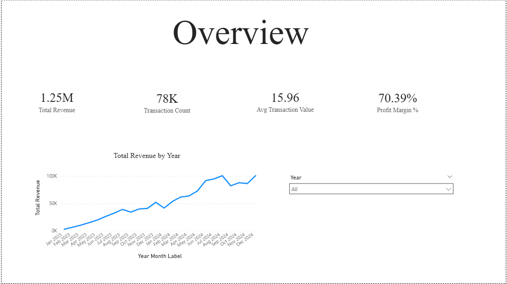
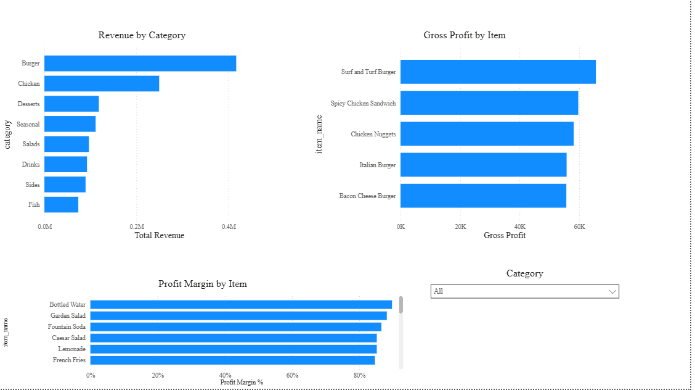
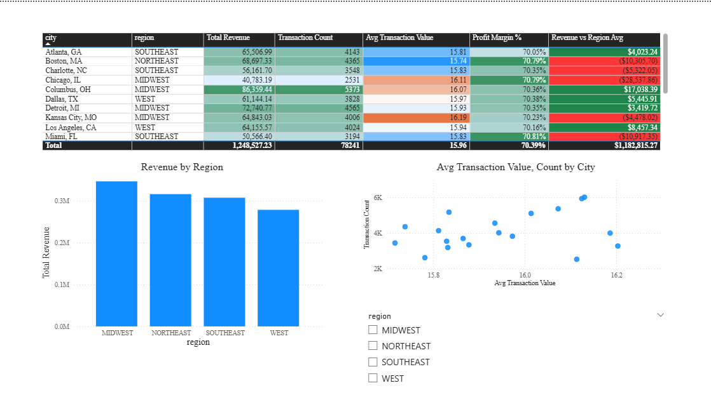
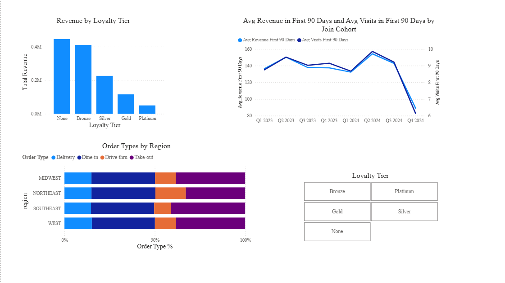
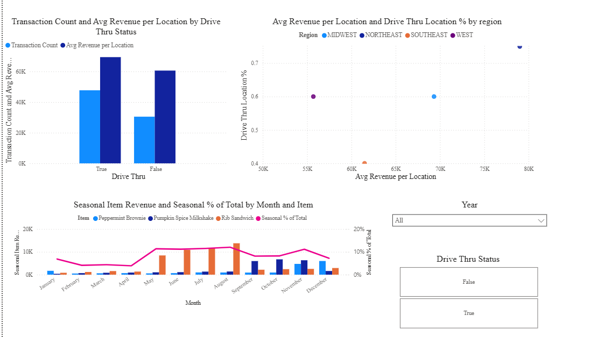

I began with 20 store locations in 4 different regions of the United States, 5 cities per region. Each location had a random opening date seating capacity, and some had drive-thrus while others did not. Next, I created a fictional menu, with 24 non-random but somewhat arbitrary items, prices, calories, and unit costs. I also included some seasonal items, which would be sold year-round but only significantly popular during certain months. I then created a bunch of random customers (2000) and randomly assigned them a home location, some demographic information, a loyalty tier, and a few other characteristics (such as whether they use an app). For each store, I created a workforce consisting of part-time and full-time employees, where the exact composition could vary from store to store (randomly, not based on anything else). Some of these employees were fired during the simulation period (again, randomly, not based on revenues or profits at their location). From there, I was able to generate an order list with purchases, totals, and various other information that a real company would collect about its customers.
I started with a top-line overview, with revenue and transactions over time. Next, I dug into revenue by category and item, and also compared to profit and gross margin to see what was most profitable. Next, I compared performance across regions, creating a heatmap which shows which locations are doing the best on several metrics, and which have room for improvement. From here, I moved to customer segmentation, seeing which types of customers bought the most items and spent the most money. I also looked to see if custoemrs that joined later were spending more or less than previous groups. Finally, I looked at the drive-thru effect: do stores with drive thrus make more money, and does that variation drive variation in regional aggregate performance? I also wanted to see if seasonal products were actually driving increased revenue in their prime months.
The full Power BI dashboard can be downloaded from github.




